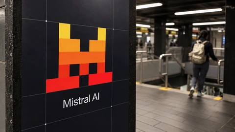
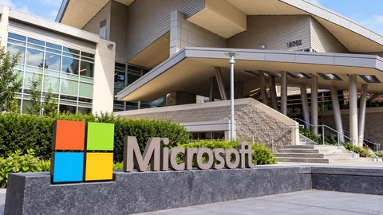
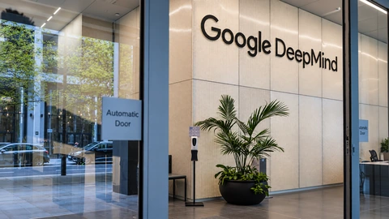
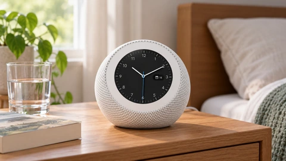
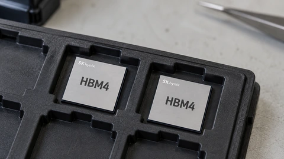

Tech & AI
Reddit Plans Login Tests as AI Search Squeezes Referral Traffic
Reddit will test a primarily logged-in experience outside the US. Sales rose 53%, but declining search referrals threaten its daily audience.
Reddit will test a primarily logged-in experience outside the US. Sales rose 53%, but declining search referrals threaten its daily audience.

Intel’s data-center sales surged, but its next-quarter forecast disappointed. A factory disruption adds another constraint as server demand remains strong.

OpenAI says its expanded checks can detect unauthorized agent actions. Coverage and automatic stopping differ, leaving businesses with oversight work to do.

Mistral’s Large 4 can now run outside its own cloud. The release gives businesses more control, but model-hosting firms face a separate license requirement.

Serval raised $150 million to automate workplace tasks with AI. Its expansion plan includes more than 500 hires, even as it promises less manual work.

The chipmaker raised its 2026 data-center revenue expectation. Optical links and power components extend the AI buildout beyond processors.

Azure revenue rose 48% and free cash flow reached $18.6 billion. Delayed infrastructure deliveries mean Microsoft’s spending test is still ahead.

Google’s new AI model targets software security and longer coding tasks. Initial access and introductory pricing have important limits.

Five new Alexa devices extend Amazon’s home hardware range. The rollout comes as its devices and services unit reduces staff.
New details of SAP’s model selection show why lower costs per useful task can matter even when total spending on artificial intelligence keeps rising.

Quarterly revenue reached 104.6 trillion won. Long-term customer agreements and planned shareholder returns put capacity and cash allocation in focus.

The roughly $11.6 billion acquisition advances, but closing and Amazon’s planned direct-to-device constellation remain separate milestones.
Reporting and explainers from the full archive.